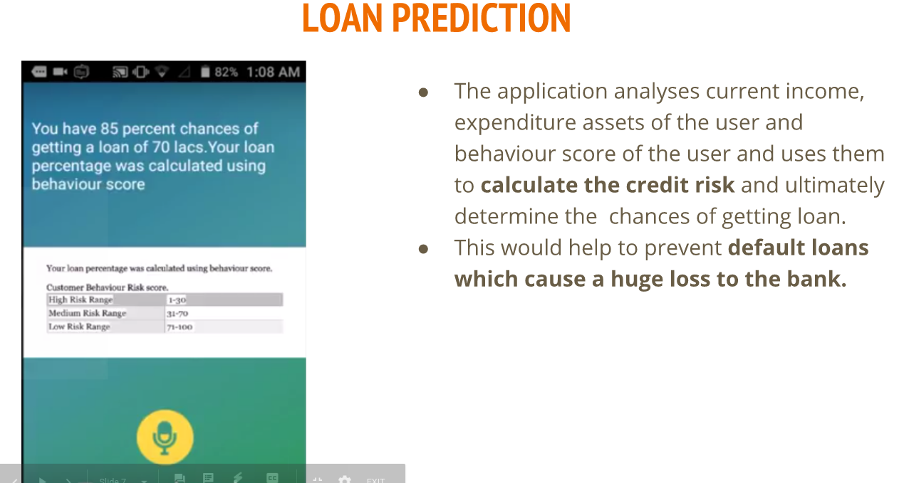
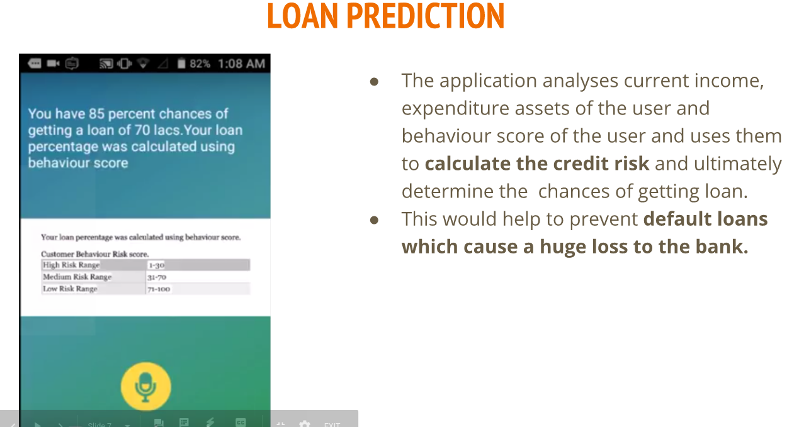

Remote Research Intern
Aug, 2018IBM
Worked on scene transfer applications using Generative Adversarial networks. The work was submitted as poster at AAAI 2019
Research Engineer
July, 2018Beneufit
Developed on a system to predict the level of parkinson's disease using monocular camera and a filed a patent on the same.
Software Developer Intern
May, 2018Amazon
Worked on building APIs in java for the financial technology team

Google Summer of Code (GSOC)
May-June 2017Implemented a research paper to provide the face alignment functionality in OpenCV organisation.

Visiting Student Researcher
October, 2016CVML Lab, IIIT-Delhi
Worked on various problems in the field of computer vision and machine learning under Dr. Chetan Arora.

Computer Vision developer
October, 2015Autonomous Underwater Vehicle - Delhi Technological University
Performed autonomous extraction and segmentation of objects from underwater imagery in natural scene. Developed a robust system for the bot to follow line in the underwater environment.

B.Tech in Information Technology
Aug, 2015Started B.Tech from Delhi Technological University


 
